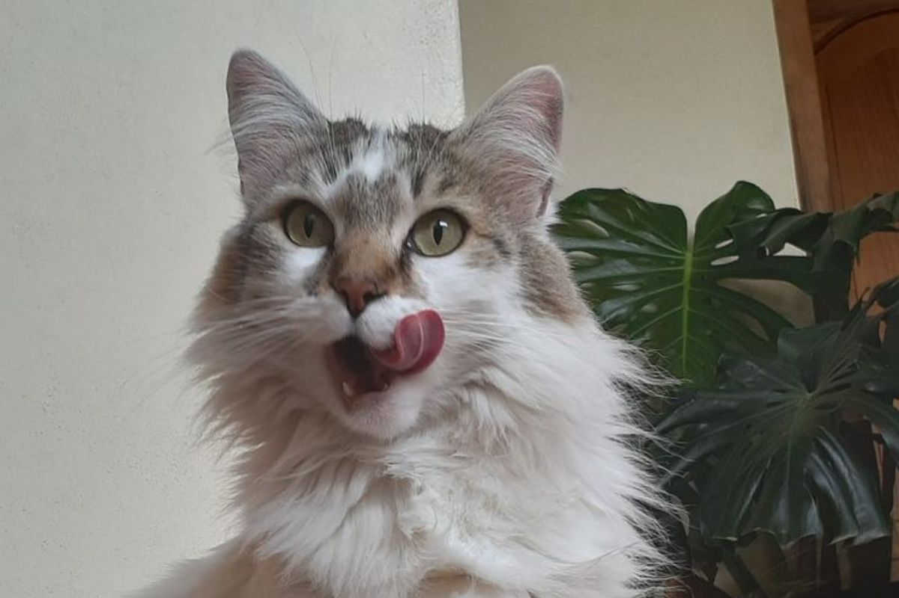
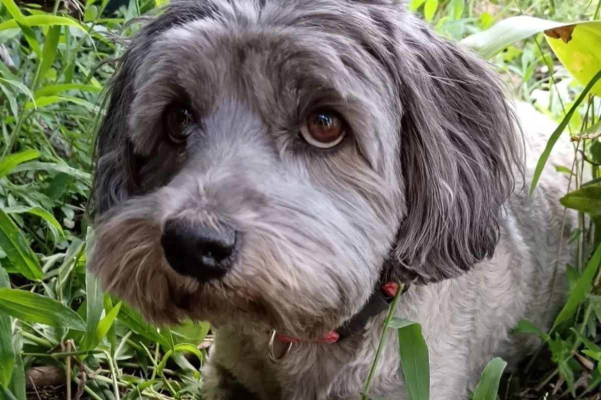
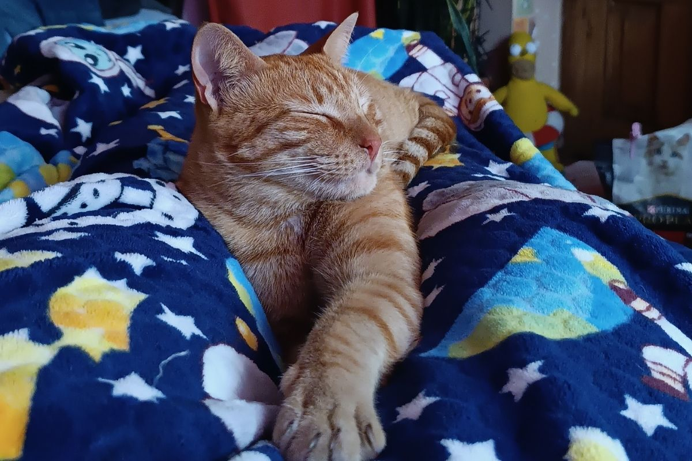

Estos son los seres que considero mi familia:
Después de la muerte de Zeus quedó como un perrito único, es bastante pequeñita y gordita porque mi abuelito le sobrealimenta, pasa todo el día con él viendo la tele y cobijada, ya no puede subir las gradas porque está viejita, y fue un regalo del ex de Gaby.

Después de la muerte de Zeus, Mona quedó desolada y triste, un gato era una gran opción y mi gato panzón favorito llego a nuestras vidas, era un secreto entre mi hermana y yo, hasta que por ser perezosas y dormilonas mi mami les descubrió. En 2025 y con la llegada de Beto, descubrimos que tiene una afección cardiaca por lo que toma medicina de por vida en la mañana y en la noche, todos le queremos mucho, aunque mi abue no es tan fan porque bota mucho pelo.

Con la llegada de la pandemia, mi sueño siempre fue tener otro perrito, por algún motivo Cory me odia, y necesitaba cariño de otro ser que no sean mis hermanas o mis papás, cada que alguien me preguntaba algo, mi respuesta siempre era que quería un perrito. Una mañana de julio, a finales de primero de bachillerato y yo revisando mis notas de biología, mi mami me gritó por el balcón, días antes me habían dicho que el perrito que yo quería ya había sido adoptado, salí por el balcón de mi cuarto y me encontré con un pequeño bollito en los brazos de mi mami. Desde ese día fuimos inseparables y cuando tuve que irme a otra provincia se quedaba viendo por la ventana esperando que yo entre por la puerta del garage. Fun fact: La Milanesa odia a todo el mundo pero siente las vibras de las personas, dependiendo de eso, te muerde o no.

En tercer semestre, mi vida se comenzó a desmoronar poco a poco, por lo que era tiempo de adoptar otro gato, que esperábamos fielmente que se lleve bien con Lupe, no pasó, y ya teníamos perritos y gato negros y blancos, había que innovar, y decidimos adoptar un gatito naranja. Beto es el menor de todos sin embargo eso no ha sido impedimento para que sea uno de los más queridos de la casa, especialmente por su caracter chistoso, su forma de ser y las travesuras que hace. Cuando le pedí a Dios que me dé algo que querer y salirme del molde, no pensé encontrar un pequeño gato que SIEMPRE pasa con un cono en la cabeza, su naturaleza naranjosa ha hecho que pase infinitamente por veterinarios, pero una de las veces que más nos asustó fue cuando se fracturó la mandíbula, la factura no fue nada barata, pero por mi bebé yo haría lo que fuera, así que hice un video y varias por no decir que muchas personas me ayudaron con un granito de arena para mi bebé. Beto ha pasado por las mejores manos y obviamente no caracter coqueto hizo que todos sus veterinarios le quieran muchísimo. Mi bebé es bastante particular: tiene los ojos naranjas, es patuchito (siempre pierde las peleas) , tiene pelo cortito, la nariz ñatita y es el más querido por mi abuelita (RARÍSIMO)
